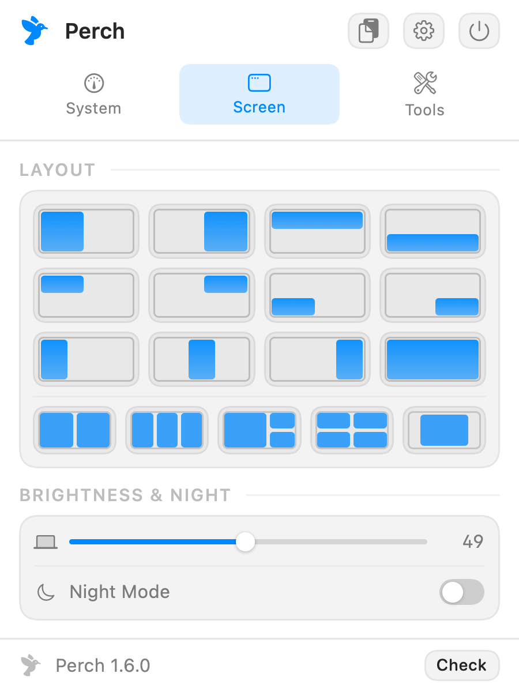
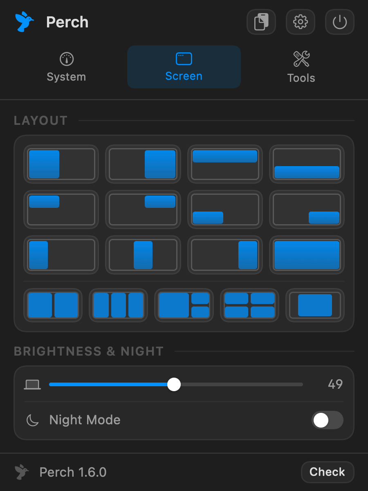
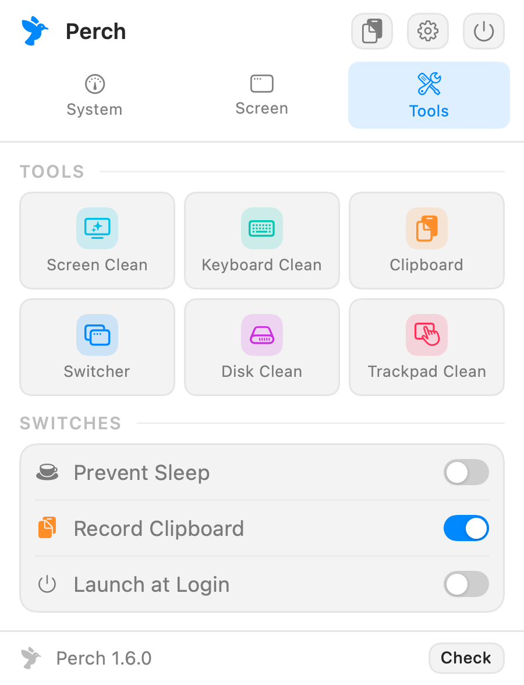
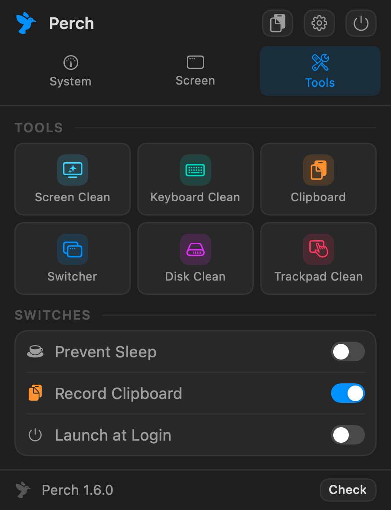

Window tiling, clipboard history, Alt-Tab, system stats, night mode and cleaning modes — one panel, every one on a shortcut.
Free & open source macOS 14+ Apple silicon & Intel No telemetry 4 MB
01 — WINDOWS
Halves, thirds, quarters, full screen. Press the same shortcut again and the width cycles — one key finds the size you meant. Five layouts tile everything at once, and one shortcut puts a window back.


02 — SYSTEM
Click CPU and you get per-core load and the processes driving it, helpers grouped under the app that owns them. Click GPU, memory, disk or network and you get the same treatment for each. End a runaway process without opening Activity Monitor, and pin any figure next to the clock.
03 — TOOLS
Blank the screen to clean it. Lock the keyboard, or just the trackpad, and wipe without typing into anything. Clear caches to the Trash. Keep the Mac awake. Paste from history.


No paid tier. All of it works the moment you install it.
Every one of them rebindable in Settings.
| Shortcut | Action |
|---|---|
| ⌃⌥Space | Open the Perch panel |
| ⌘⇧V | Clipboard history |
| ⌥Tab | Alt-Tab — hold Option, tap Tab, release to switch |
| ⌃⌥` | Searchable window switcher |
| ⌃⌥← → | Left / right half — press again to cycle ⅓, ⅔ |
| ⌃⌥↑ ↓ | Top / bottom half |
| ⌃⌥↩ | Maximize |
| ⌃⌥⌫ | Restore original size |
| ⌃⌥⇧← → | Move to previous / next display |
| ⌃⌥N | Night mode |
| ⌃⌥K | Screen cleaning |
| ⌃⌥⇧L | Keyboard cleaning |
| ⌃⌥⇧T | Trackpad cleaning |
Free, and takes about a minute.
Grab the newest Perch-x.y.z.dmg from the releases page.
Open the DMG and drag the app onto the Applications shortcut, then eject it.
Perch is signed, but not notarized — that needs a paid Apple Developer account — so macOS blocks it on first launch. Paste this into Terminal:
xattr -dr com.apple.quarantine /Applications/Perch.app
Prefer not to use Terminal? Open Perch, dismiss the warning, then go to System Settings → Privacy & Security, scroll to Security and click Open Anyway. On macOS 15 and later, Control-clicking and choosing Open no longer works for unnotarized apps.
System Settings → Privacy & Security → Accessibility, then add
Perch.app. Needed for window tiling, the switcher, Alt-Tab and the
cleaning modes. Perch reads window positions and titles — never window contents.
Perch lives in the menu bar with no Dock icon. If a notch or a full menu bar hides the icon, the shortcut still opens the panel.
brew trust is required for any third-party tap — current Homebrew refuses to
load one without it. The xattr line is still needed: Homebrew 6 removed
--no-quarantine, and the app is quarantined regardless because it is not
notarized. Homebrew's advantage here is upgrades, not a smoother first launch.
brew tap ishanmalu/tap brew trust ishanmalu/tap brew install --cask perch xattr -dr com.apple.quarantine /Applications/Perch.app open -a Perch
Then grant Accessibility access under System Settings → Privacy & Security → Accessibility, and press ⌃⌥Space.
Needs Swift 6 and the macOS SDK. Command Line Tools are enough — full Xcode is not required.
git clone https://github.com/ishanmalu/Perch.git cd perch Scripts/install.sh
Builds, runs the self-test, installs to /Applications and launches it.
Nothing is downloaded, so there is no quarantine flag to clear.
Perch can see window titles, read the clipboard and intercept keystrokes. That deserves saying plainly.
Full detail in SECURITY.md.
Every release ships a checksum, and you can run the built-in checks yourself with
Perch --selftest.